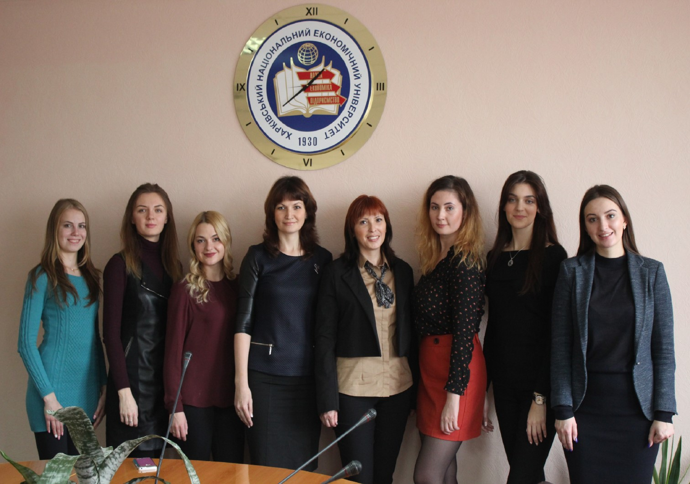

КАФЕДРА ПРЕДПРИНИМАТЕЛЬСКОЙ ДЕЯТЕЛЬНОСТИ
Кафедра предпринимательской деятельности функционирует в составе факультета менеджмента и маркетинга, аккумулирует в себе высокий научно-педагогический потенциал. Она является выпускающей кафедрой по подготовке специалистов по образовательным степеням «бакалавр» и «магистр» по специальности «Предпринимательство, торговля и биржевая деятельность» и имеет высокий научно-методический и воспитательный потенциал.
Миссия кафедры заключается в формировании гармонично развитой личности – высококвалифицированного предпринимателя, способного в рыночных условиях принимать обоснованные экономические решения и нести ответственность за результативность собственного бизнеса.

Научно-педагогический состав кафедры предпринимательской деятельности представлен высококвалифицированными преподавателями во главе с заведующей кафедрой – доктором экономических наук, профессором Гонтаревой Ириной Вячеславовной. Под руководством Гонтаревой Ирины Вячеславовны в декабре 2016 года защищено 2 диссертации на соискание ученой степени кандидата экономических наук по специальности 08.00.04 – экономика и управление предприятиями (по видам экономической деятельности).
Преподавательской состав кафедры постоянно проводит научные исследования в области управления эффективностью развития предпринимательской деятельности, по результатам которых опубликованы следующие научные работы:
МОНОГРАФИИ:
- Гонтарева И. В. Системная эффективность предприятия: сущность, факторы, структура : монография / И. В. Гонтарева, Р. М. Нижегородцев. – М. – Киров : ВСЭИ, 2012. – 152 с.
- Економіка підприємства: компетентність і ефективність розвитку : монографія / В. С. Пономаренко, М. В. Афанасьєв, І. В. Гонтарева та ін. ; за заг. ред. докт. екон. наук, проф. В.С. Пономаренка. – Х. : Вид. ХНЕУ, 2013. – 176 с.
- Пономаренко В. С. Методологія комплексного оцінювання ефективності розвитку підприємств : монографія / В. С. Пономаренко, І. В. Гонтарева ; за заг. ред. докт. екон. наук, проф. В.С. Пономаренка. – Х. : ХНЕУ ім. С. Кузнеця, 2015. – 404 с.
- Гонтарева И.В. Компетентность – основа трудового потенциала предприятия (Глава 2) // Управление компетенциями: структура, институты, механизмы: Монография/ Под общ. ред. Р.М.Нижегородцева, С.Д.Резника. М.: ИНФРА-М, 2016. – С. 30-44
ПУБЛИКАЦИИ В СПЕЦИАЛИЗИРОВАННЫХ ЖУРНАЛАХ И ИЗДАНИЯХ:
- Гонтарева І.В. Вплив своєчасності відтворювальних процесів на системну ефективність розвитку підприємства / І.В. Гонтарева // Актуальні проблеми економіки: науковий економічний журнал. – К. : Національна академія управління.- 2011. – № 2(116). – С. 69-76
- Пономаренко, В. С. Структура визначення інтегрального показника системної ефективності розвитку підприємства / В. С. Пономаренко, І. В. Гонтарева // Економіка розвитку. – №1 . – 2012. – С. 86-94.
- Гонтарева І. В. Оцінка потенціалу техніко-технологічної бази промислового підприємства / І. В. Гонтарева // Вісник Сумського державного університету. Сер. : Економіка. – 2011. – № 4. – С. 133-139.
- Гонтарева І. В. Оцінювання стійкості циклів і процесів в рамках ефективного розвитку підприємств // Проблеми економіки. – 2011. – №2. – C. 63–66.
- Гонтарева И. В. Соотношение экономических эффектов и эффективности / И. В. Гонтарева, А. В. Дорохов // Economics & Economy. – 2013. – Vol. 1, № 1. – С. 197–205
- Ponomarenko V., Gontareva I., Dorokhov O. STATISTICAL TESTING OF KEY EFFECTIVENESS INDICATORS OF THE COMPANIES (CASE FOR UKRAINE IN 2012) // Economic Studies. – 2014. – Т. 23. – №. 4.
- Гонтарева І. В. Структура навчальних програм при формуванні складних компетентностей / І. В. Гонтарева // Науковий вісник Національного гірничого університету. – 2015. – № 1. – С. 127-132.
- Gontareva I. Theoretical background and problems of energy efficiency in Ukraine / I. Gontareva, D. Streimikiene, O. Ivanenko // Transformations in Business and Economics. – 2015. – Vol. 14. – No. 2A (35A). – P. 563–584.
- Гонтарева, І. В. Організаційний капітал у складі комплексної оцінки ефективності функціонування підприємства / І. В. Гонтарева // Ефективна економіка. – 2016. – № 1.
- Гонтарева, І. В. Організаційно-економічне забезпечення ефективності розвитку підприємницької діяльності з урахуванням оплати праці / І. В. Гонтарева // Управління розвитком, 2016. – № 1(183). – C. 72-76.
- Гонтарева, І. В. Ефективність організації трансферу технологій у підприємницькій діяльності / І. В. Гонтарева // Вісник Львівської комерційної академії. – 2016. – Вип. 50. – Сер. економічна. – С. 5-8.
УЧЕБНЫЕ ПОСОБИЯ:
- Гонтарева І.В. Управління проектами : навч. посіб. / І. В. Гонтарева. – Х. : ХНЕУ, 2007. – 348 c.
- Афанасьєв М.В., ; Гонтарева І.В., Тишенко Д.О., ; Тренінг формування компетенцій з економіки підприємства: Навчальний посібник / Афанасьєв М.В., Гонтарева І.В., Тишенко Д.О. К.: ВД ″ІНЖЕК″, 2010. – 328 с.
- Гонтарева І. В. Управління проектами: підручник / І. В. Гонтарева. – Х.: ХНЕУ, 2011. – 444 с.
- Гонтарева И.В. Нижегородцев Р.М., Новиков Д.А.Управление проектами Учебное пособие / Изд стереотип. – М. : Книжный дом «ЛИБРОКОМ». 2014. – 384 с.